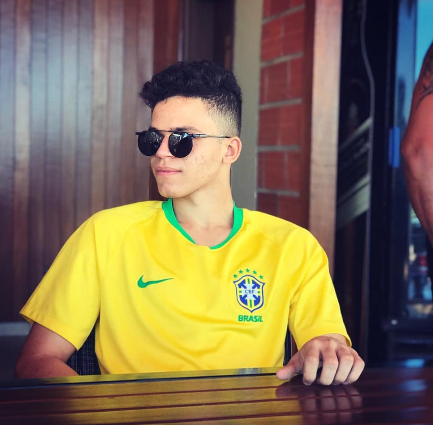
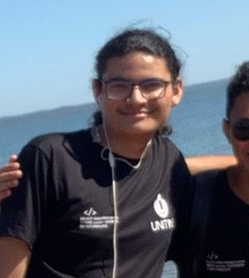

QUEM EU SOU?

Meu nome é Gabriel Vinicius. Tenho 19 anos e moro em Palmas-TO. Nasci e fui criado aqui, sempre morei com meus pais e dois irmão mais velhos, Rafael e Rafaella. Sou o caçula.
Aos 18 anos entrei na faculdade, passei pra sistemas para internet no IFTO, porém não me adpetei ao EAD da instituição e descidi tentar o vestibular da UNITINS, onde consegui a aprovação para o curso de Sistemas de Informação. É a area que eu pretendo seguir desde os meus 13 anos, quando ganhei meu primeiro computador, gostava muito de ficar fuçando e aprendendo coisas novas sobre e descidi que quero isso pra minha profissão futura.
Sempre tive muito apoio dos meus pais para seguir a profissão... bem, no começo eles achavam que era uma profissão meio "desvalorizada", mas de pois eles compreenderam a importancia. Meus pais acreditam que o conhecimento é a unica coisa que ninguem pode tirar de nós e que a educação é a melhor herança que podem deixar para mim e meus irmãos. Por isso sempre batalharam para nos dar ensino de qualidade. E foi assim, que minha irmã e meu irmão formou-se em enfermagem.
O QUE EU GOSTO DE FAZER?
Bem, no meu tempo livre, gosto de jogar, meu estilo de jogo é FPS. Um COD, CS, as vezes jogo até um PB pra matar a saudade. Gosto tambem de series e filmes, consumo bastante series principalmente de ação e antigas. Curto animes e desenhos tambem. Tambem gosto de sair bastante com meus amigos, acredito que seja a melhor terapia. Enfim, um breve ressumo de QUEM EU SOU.

Quem sou eu?
Meu nome é kallyw Lucas. Tenho 18 anos. Minha casa fica no aureny 3,
todas as casas estão, e eu não sou casado. Eu não trabalho e chego em casa todos os dias às 13h,
no máximo. Eu não bebo, e Estou na cama às 22 horas e me certifico de sempre acordar às 6 horas,
não importa o que aconteça. Depois de tomar um copo de leite morno e fazer cerca de vinte minutos
de alongamentos antes de ir para a cama, geralmente não tenho problemas para dormir até de manhã.
Assim como um bebê, eu acordo sem nenhum cansaço ou estresse pela manhã. tentando explicar que sou
uma pessoa que deseja viver uma vida muito tranquila
O QUE EU GOSTO DE FAZER?
Eu gosto de jogar bastante, principalmentes jogos mais de ação, nada como um COD ou jogos de tiro,
seria algo jogos de plataforma como Hollow Knight (meu jogo 2D favorito) e Dark Souls 3
(meu jogo favorito que já zerei 4 vezes), as vezes eu fico criando historias, nada relacionado a fan fic
(nada de fan fic de kpop) mas algumas historias diferentes com um teor historia originais, gosto de assistir
desenhos, principalmente desenhos mais cartoon como incrivel mundo de gumball e algumas series, mesmo não
gostanto tanto assim de series e quando estou inspirado eu desenho, não muito bem obviamente,
mas tento mesmo que não sejam de Minha autoria e aqui é um local familiar para mostrar todos eles
(e não vou falar que tipo de desenhos são esses sem a presença meu advogado) meus gostos musicais?
eletronica e rock, principalmente rock como Pink floyd, Gorillaz, AC/DC, Queen, Arctic Monkeys, Green day e algumas bandas mais
independetes como Jack stauber, MysteryBen27, Goldfinger, Caravan Place e etc, mas tambem algumas musicas unicas, se quiserem ver
mais sobre isso a baixo vai ter mais informação